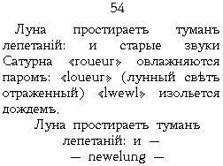
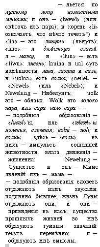
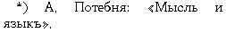

Glossolalia (Section 54)
GLOSSOLALIA


-- flows upon the lunar lap with modifying means [izmennymi menami]; and it -- is "browl" (or: a light out of the steam); and the root "li" signifies, that something is flowing* and "lin" -- this is cling to [linut'] (l'nut'); "lino" -- I act like a liquid: I -- lubricate; and "liun" is -- "liwn": a Russian downpour [liven']; lauina and ual are modifications: lava, avalanche [lavina] and a swell [val]; and "uolna" is a Russian wave [volna]; "neuel" is -- "Newel" (or Nebel); and Newelung -- Nibelung; uolk this is-- a cloud; Wolk this is wisp of steam [voloko para]: a swell of boiling water [val vara]: --
-- similar formations are -- "luewl"'s, or "wlewl"'s: eventualities [yavlenya], involvements [vlecheniya]; uolni -- uoli; and waves here are -- "freewills"-- in them is -- the impulse of descending animality; the moisture of motion -- is animated-alive: Newelung is -- a Being, and it is -- the Mime of eventualities: of their -- mimes --
-- similar formations of words reflect to us in sounds: the genuine past; they reflect the life of the Moon to us; and they are -- apparitions in us; beings of past lives in me form mists of significations: they flow changeably; and -- form for me meanings.
